You: “it looks like the animation you did is just the same you've done for everything else … i want it to actually look really good and be really well thought out”
Today the New project card pops up the same way every other box in the app does. Here are three entrances that belong only to the +. Every frame is your real Home and the real New project card, frozen partway through. The three clips show them moving.
The + turns away, and the colourful orb itself swells up and becomes the card. Its colours drain into the card as it lands, then the fields rise in one by one. The button you pressed is literally the thing that opens, and nothing else in the app has that orb. Cancel runs it backwards, so the card shrinks back into the orb.
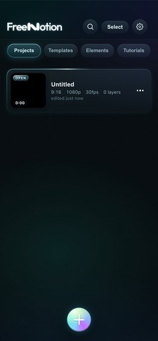
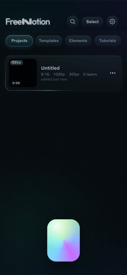
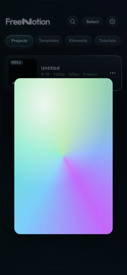
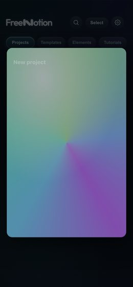
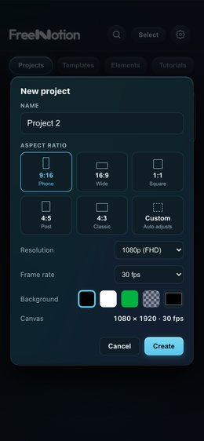
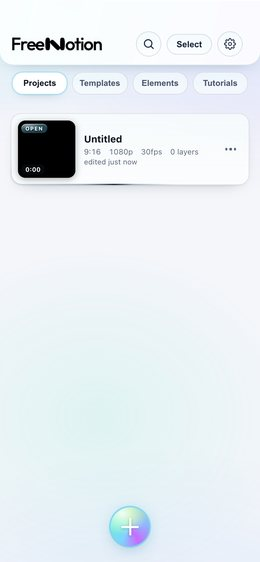
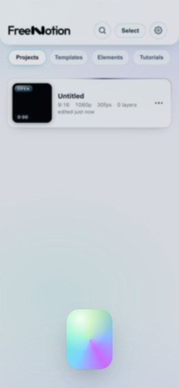
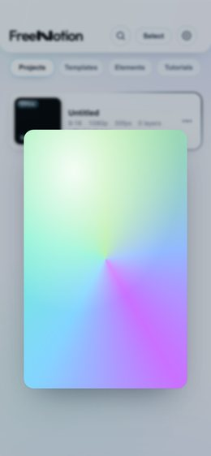
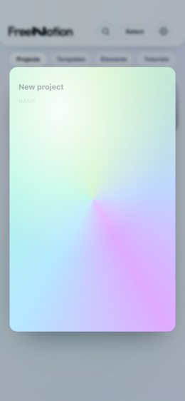
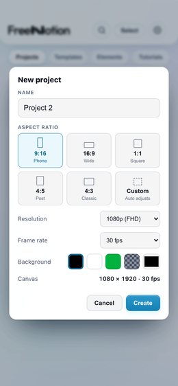
A small blank 9:16 frame (a new project’s canvas) rises out of the + with its outline drawing itself in the orb’s colours. It pauses in the middle, then grows into the card and fills in. It shows “a blank canvas is being made”. It is the showiest on the dark Home and the quietest on the light one.
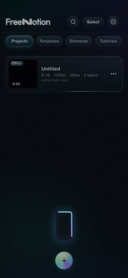
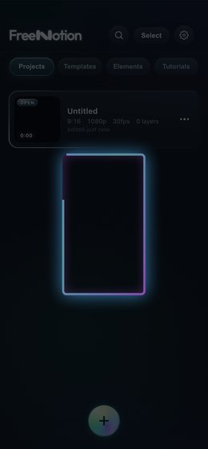
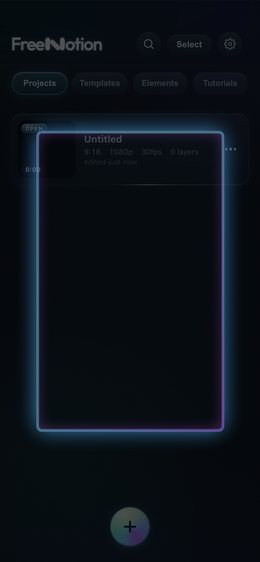
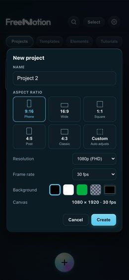
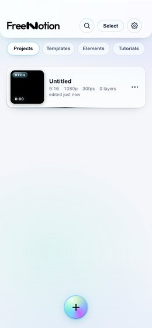
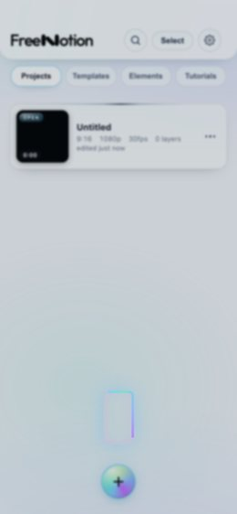
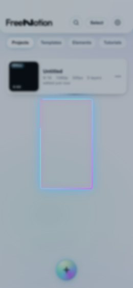
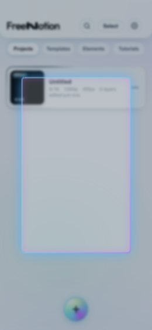
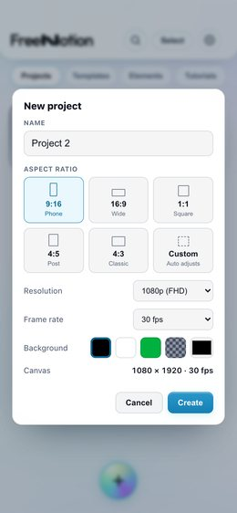
A ring in the orb’s colours spreads out from the +, and the dimmed screen opens behind it as a growing circle. The card rises from below with a little bounce, and the + turns into an ×. The simplest of the three, but this kind of reveal is common in other apps.
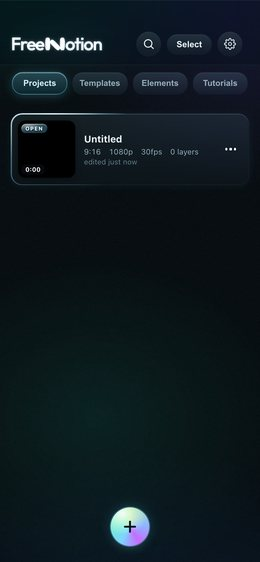
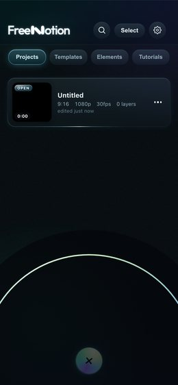
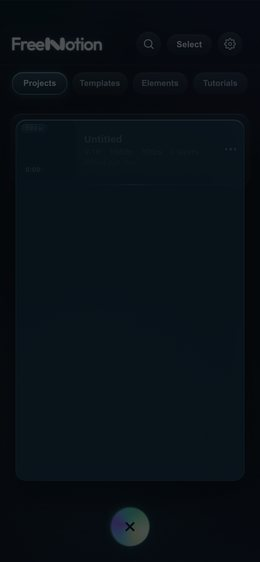
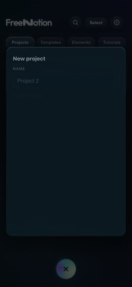
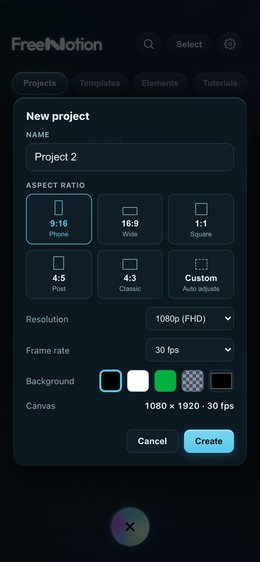
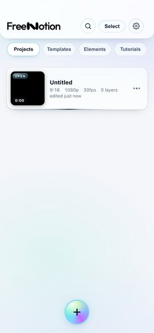
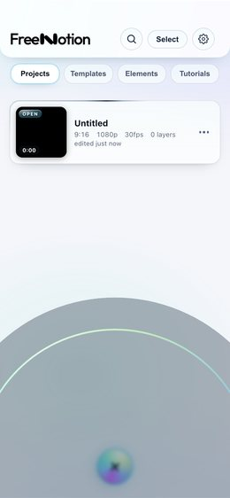
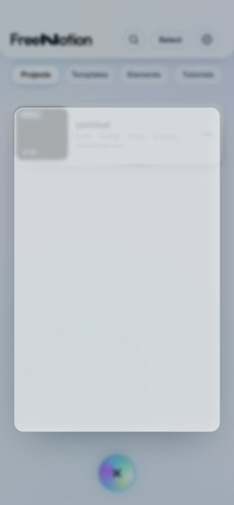
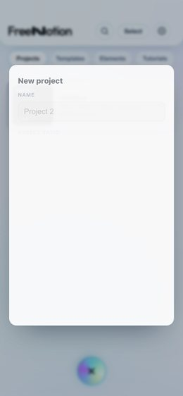
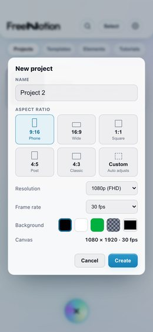